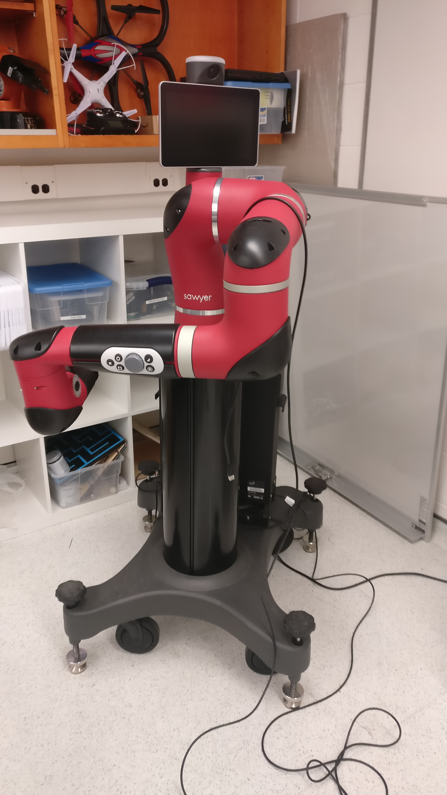
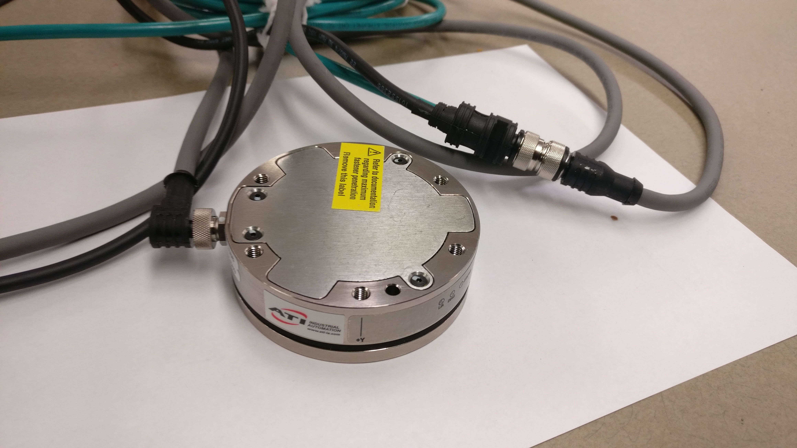

Force Control for Sawyer
Jan 2018 - Current
For any robot the physical properties of any grasped object are the same. Aimed at giving the robot this sense of touch i.e basically allow it to differentiate between a brick and a sponge, this project utilizes ATI force/torque sensor coupled with robot's end effector. For this project, Sawyer is used which is a cobot developed by Rethink Robotics.
The data from the sensor is used by a ROS package that makes the robot 'touch' smart.
 Skills Involved
- ROS
- Python
- Inverse Kinematics
- Data Acquisition